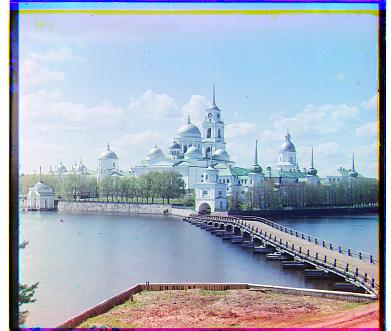

Single Scale Method

Green Offset: (1, -1), Red Offset: (7, -1)

Green Offset: (3, 2), Red Offset: (6, 3)

Green Offset: (-3, 1), Red Offset: (3, 2)
I first started with exploring the layering of the 3 channels (R, G, B) and used
np.roll and np.stack to align them into one image.
Then I tried finding optimal alignment using the SSD metric on a smaller image.
After that, I implemented the pyramid method to make the search much faster on large images.
At first I struggled without a center/bias variable, but eventually realized scaling down and
using a stable coordinate system was key. After tuning the metrics, the alignment worked well.